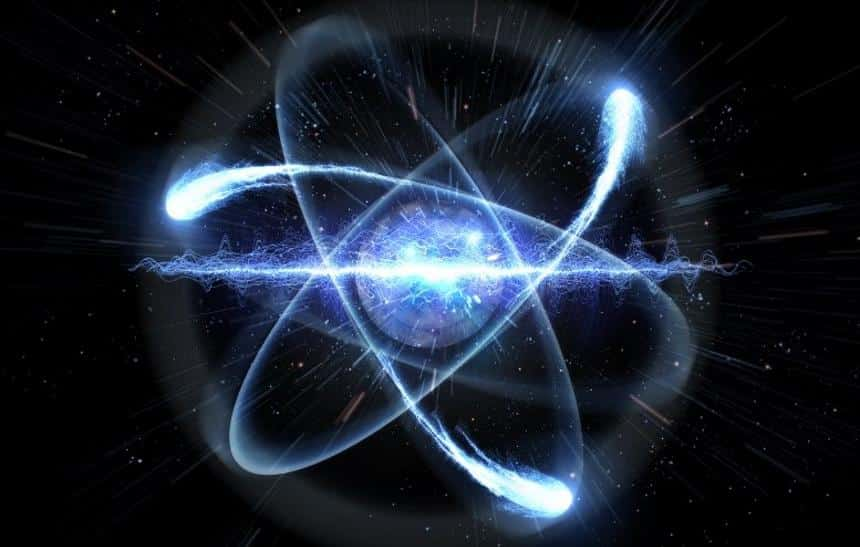

De acordo com a wikipedia: Também conhecida como mecânica quântica, a física quântica é a ciência que
estuda as estruturas físicas com dimensões próximas aos átomos, ou seja quase ou mais pequenas que os
átomos. Tal ciência é um ramo fundamental que fornece explicações precisas para fenômenos previamente
inexplicados, como a radiação de corpo negro, e a estabilidade dos átomos.
